#IwanttoLEARN
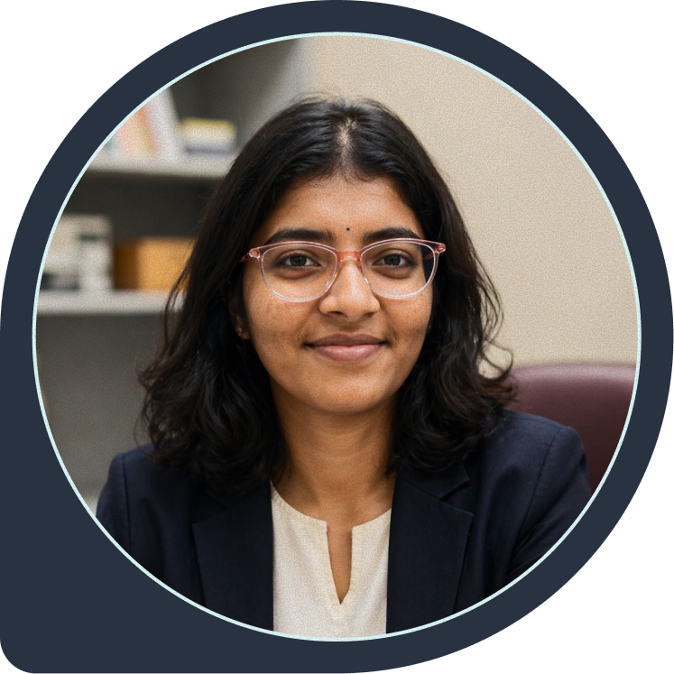
Exploring Machine Learning, AI for Healthcare, and the mathematical foundations behind intelligent systems.
I am currently pursuing M.Tech (2024-2026) at IIT Madras in Clincial Engineering (AMBE) with a bachelor's degree in Biotechnology, transitioning into Machine Learning and Artificial Intelligence.
I am interested in how mathematics is applied in data science and want to understand the core principles behind it. I aim to work in the research field of AI in healthcare, where it can improve efficiency and help solve complex problems.
Currently, I am focused on building a strong foundation in AI and Machine Learning, including the underlying mathematics. I have successfully completed the Mathematics for Data Science (MFDS) course under the Department of Data Science and Artificial Intelligence (DSAI). I am also studying machine learning concepts and actively practicing ML algorithms. Alongside strengthening my theoretical knowledge, I am seeking guidance and hands-on projects as project staff that will help me apply AI meaningfully to healthcare challenges.
-M.Tech in Clinical Engineering
Indian Institute of Technology Madras (IITM) | 2024-2026
-B.E in Biotechnology
Nitte Mahalinga Adyantaya Memorial Institute of Technology | 2018-2022
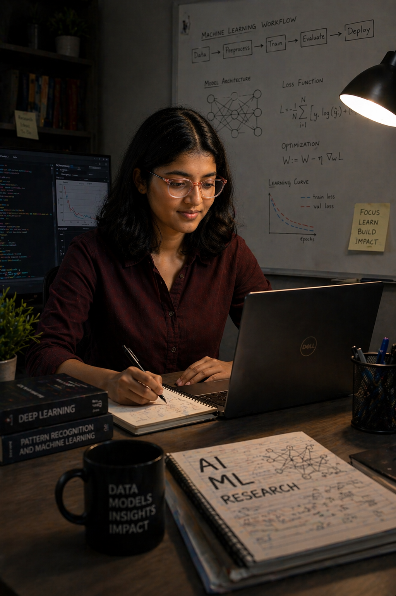
Currently focusing on building strong foundations in Machine Learning and Mathematics, while having prior experience working with engineering design, simulation, and software tools.
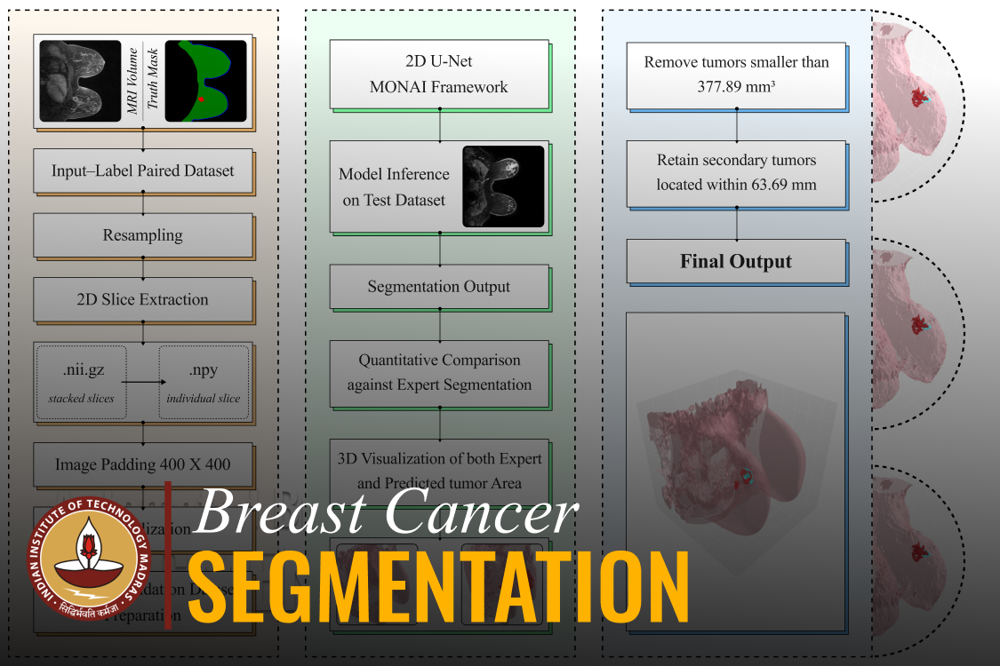
Develop an efficient and reliable method to accurately segment breast tumor regions from MRI data for precise, targeted treatment while handling computational constraints and preserving spatial accuracy.
Institute: IIT Madras
Type: M.Tech Thesis
Year: 2026 | Final Semester
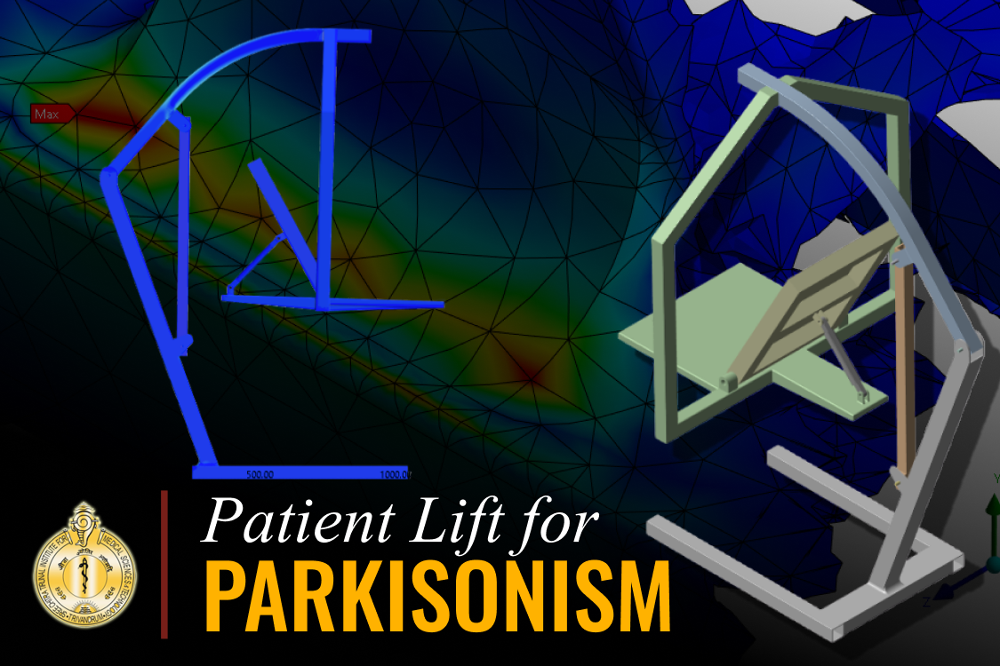
Developed a novel rehabilitation concept for the upper body of Parkinsonism patients, utilizing mechanical principles involving gears and linear actuators to enable controlled front-back and side-to-side movements.
Institute: SCTIMST
Type: Academic Project
Year: 2025 | Third Semester
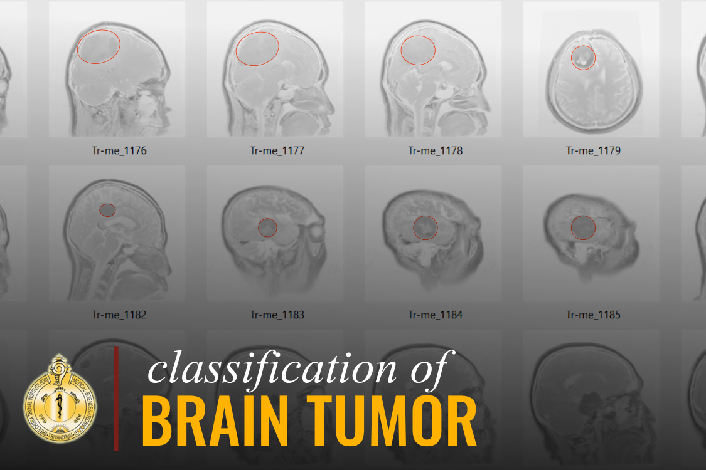
Designed and implemented a CNN-based medical image analysis framework for automated brain tumor classification from MRI scans. Applied preprocessing, feature extraction, and multiclass classification techniques to support AI-assisted diagnostic decision-making.
Institute: SCTIMST
Type: Academic Project
Year: 2025 | Third Semester
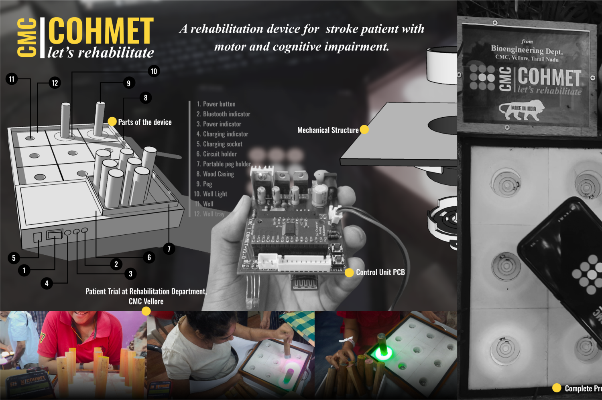
Smart rehabilitation system with sensors and real-time tracking for rehabilitation of stroke patients making the process of recovery more effective and quantifiable.
Institute: CMC Vellore
Type: Academic Project
Year: 2025 | Second Semester
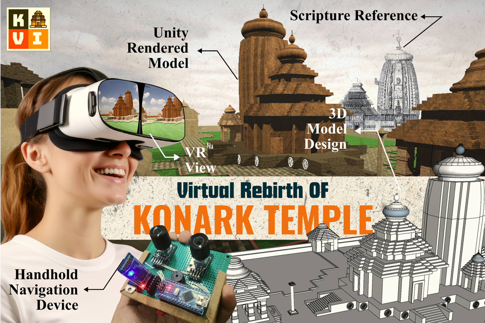
Built a Unity-based mobile VR experience with an ATmega328P + HC-05 based universal handheld controller for navigating in 3D space and reconstructing the Konark Sun Temple.
Institute: IIT Madras
Type: Course Project
Year: 2024 | First Semester
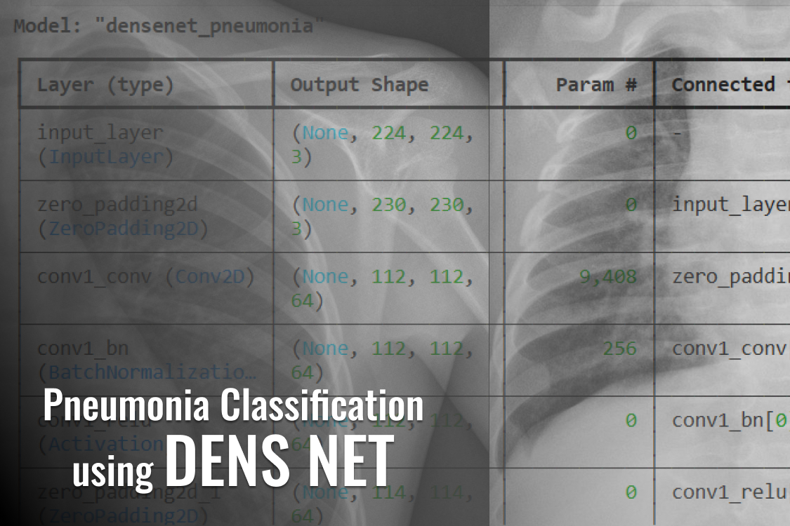
Type: Self-Learning Project
Year: 2025
This project focuses on classifying pneumonia from chest X-ray images using deep learning models such as DenseNet201.
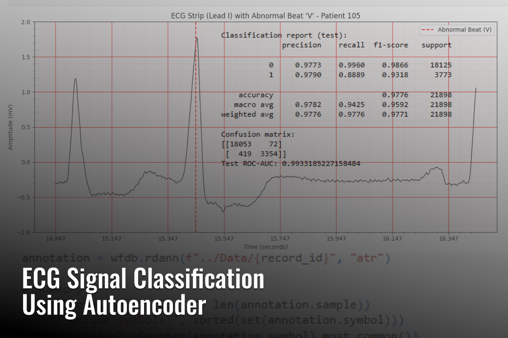
Type: Self-Learning Project
Year: 2025
Developed a deep learning pipeline using a 1D convolutional autoencoder followed by machine learning classifiers for ECG classification.
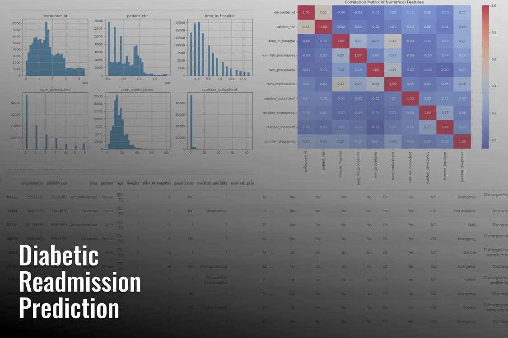
Type: Self-Learning Project
Year: 2025
Built a machine learning model to predict hospital readmission risk in diabetic patients using clinical and demographic data.
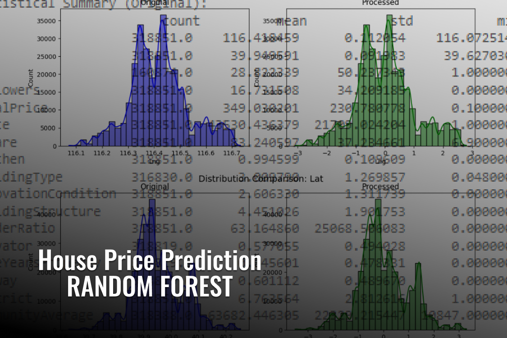
Type: Self-Learning Project
Year: 2025
Developed a Random Forest based machine learning model to predict house prices using various housing features.
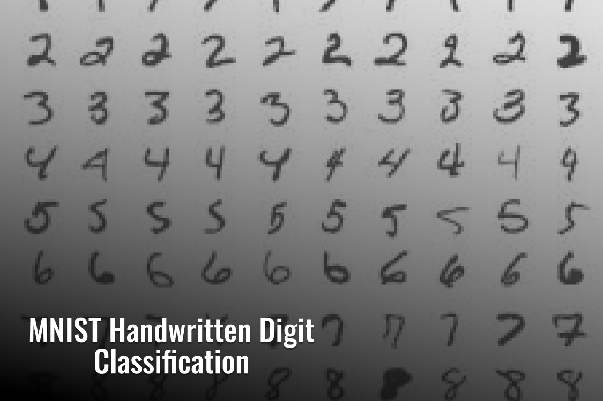
Type: Self-Learning Project
Year: 2025
Designed and trained a CNN to accurately recognize handwritten digits from the MNIST dataset.
International Conference on Neurorehabilitation (ICNR 2026)
Research paper describing the design, development and validation of a rehabilitation platform for simultaneous cognitive and hand-motor rehabilitation with objective performance tracking.
International Conference on Recent Trends in Materials Science & Devices 2026 (ICRTMD-2026)
Research work focused on the conceptualization, design, finite element analysis and rehabilitation application of a modified patient lift for Parkinsonism therapy.